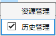
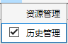

1.4.2 多连通蒙版
 多连通蒙版可用于生成或导出具有多个连通域的蒙版，可用于提取感兴趣区域荧光强度变化。 点击生成蒙版，可使用蒙版管理器结合ROI区域绘制得到体积蒙版。(Version > 2.1.0) 点击导入蒙版，加载由NuclearCounter App V1.0.1生成的蒙版文件。(Version < 2.1.1) 当导入多连通蒙版后，屏幕上会出现对应区域，此时信号提取器将处于可用，如下图示例：

多连通蒙版可用于生成或导出具有多个连通域的蒙版，可用于提取感兴趣区域荧光强度变化。
点击生成蒙版，可使用蒙版管理器结合ROI区域绘制得到体积蒙版。(Version > 2.1.0)
点击导入蒙版，加载由NuclearCounter App V1.0.1生成的蒙版文件。(Version < 2.1.1)
当导入多连通蒙版后，屏幕上会出现对应区域，此时信号提取器将处于可用，如下图示例：